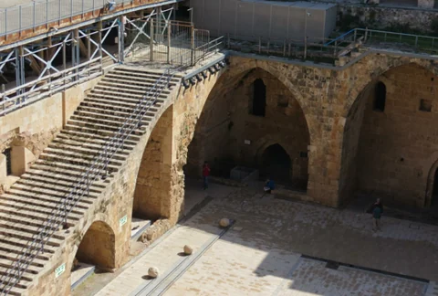
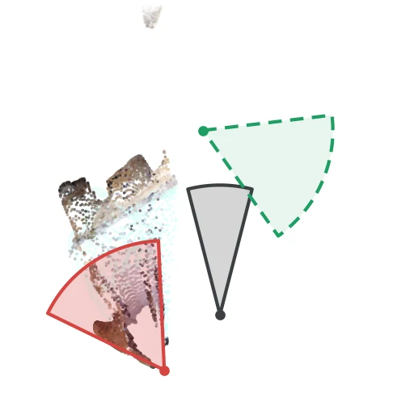
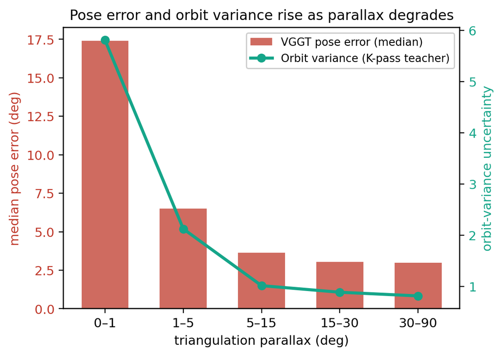
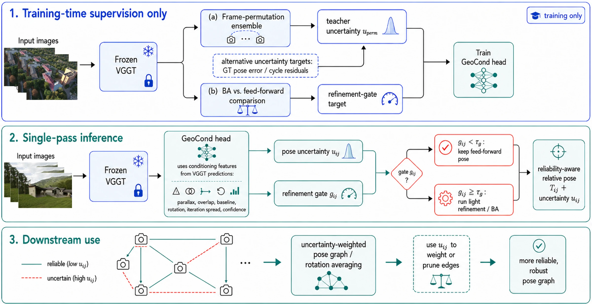
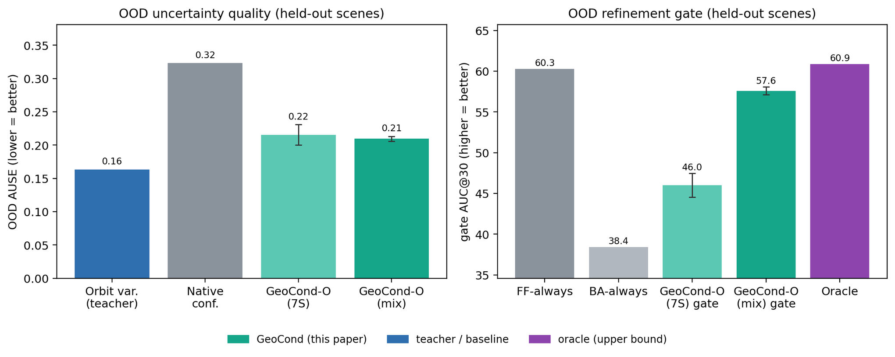
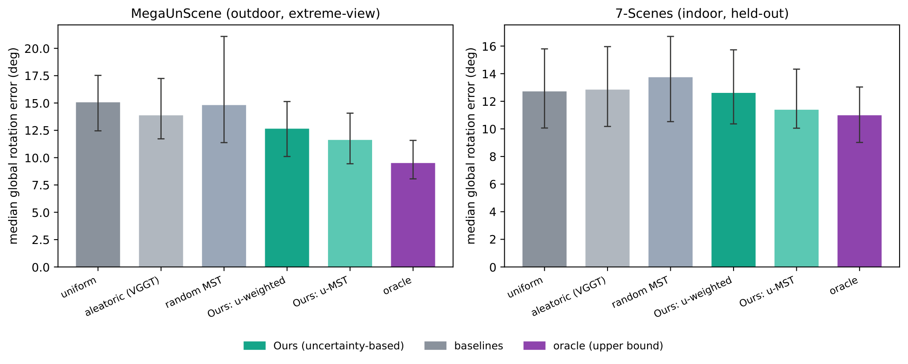

Know when to trust feed-forward 3D
VGGT gets the pose of these two photos badly wrong, and its own confidence does not single the pair out. GeoCond reads the same forward pass and ranks the pair among the least reliable.

view 1
Bird's-eye view; view 1 faces up.
Feed-forward 3D foundation models such as VGGT predict cameras, depth, and point maps in a single pass, but can fail silently under low overlap, low parallax, and extreme relative rotation. Stratified analyses over these factors show that these failures are governed by geometric conditioning and are poorly captured by native aleatoric confidence.
We introduce GeoCond, a lightweight reliability adapter for frozen feed-forward 3D backbones. GeoCond reads geometric conditioning cues and the backbone's own stability signals and outputs pose-level uncertainty and a refinement gate. During training, it can be supervised by frame-permutation orbit variance, ground-truth pose error when labels are available, or cycle residuals from unlabelled independent pose graphs. At inference, the default head requires only one backbone pass and a small MLP.
On VGGT, GeoCond improves out-of-distribution (OOD) AUSE (area under the sparsification-error curve; lower is better) from 0.32 to 0.20 over native confidence on held-out outdoor scenes (and to 0.21 when trained on indoor data only) and avoids the collapse caused by applying bundle adjustment uniformly, without improving on feed-forward poses there. For three of six backbones, cycle-distilled variants provide a ground-truth-free adaptation route, including cases where permutation variance vanishes on equivariant models. The same reliability signal supports gated refinement, pose-graph weighting, calibration, curation, and capture decisions. Reliable feed-forward 3D reconstruction requires not only predicting geometry, but also knowing when that geometry should be trusted.

On 7-Scenes, VGGT's median relative-pose error rises from about 3.0° at high parallax to 17.4° below 1° parallax, and 22% of those low-parallax pairs exceed 30°. Low overlap and large relative rotation have the same effect. The orbit variance, the spread of a pose when the frozen backbone is re-run on permuted frame orders, follows the error closely. VGGT's native per-pixel confidence does not.
The pattern repeats on MegaUnScene (outdoor, extreme views), MegaDepth-1500 and ScanNet-1500: a conditioning-based score ranks pose error better than native confidence on all six evaluation sets in the paper.
| Dataset | Bin | n | Med. error | Cat. rate | Native AUSE ↓ | GeoCond AUSE ↓ |
|---|---|---|---|---|---|---|
| 7-Scenes office | overlap < 0.01 | 227 | 42.2° | 54% | 0.263 | 0.284 |
| 7-Scenes office | overlap 0.01–0.3 | 112 | 6.8° | 11% | 0.189 | 0.064 |
| 7-Scenes office | overlap ≥ 0.3 | 361 | 7.4° | 19% | 0.213 | 0.142 |
| 7-Scenes office | rotation < 30° | 362 | 7.6° | 19% | 0.207 | 0.139 |
| 7-Scenes office | rotation 30–90° | 179 | 11.0° | 20% | 0.231 | 0.141 |
| 7-Scenes office | rotation ≥ 90° | 159 | 85.5° | 63% | 0.178 | 0.204 |
| MegaUnScene (OOD) | overlap < 0.01 | 491 | 11.3° | 32% | 0.429 | 0.251 |
| MegaUnScene (OOD) | overlap 0.01–0.3 | 305 | 3.5° | 5% | 0.193 | 0.165 |
| MegaUnScene (OOD) | overlap ≥ 0.3 | 104 | 10.0° | 27% | 0.385 | 0.285 |
| MegaUnScene (OOD) | rotation < 30° | 323 | 5.7° | 14% | 0.333 | 0.207 |
| MegaUnScene (OOD) | rotation 30–90° | 400 | 5.2° | 21% | 0.239 | 0.149 |
| MegaUnScene (OOD) | rotation ≥ 90° | 177 | 18.7° | 40% | 0.547 | 0.357 |
Table 2 in the paper. Held-out 7-Scenes office and MegaUnScene pairs, binned by ground-truth overlap and relative rotation. The catastrophic rate is the share of pairs with pose error above 30°. Out of distribution, GeoCond ranks pose error better than native confidence in every bin; on 7-Scenes office, native confidence is better in the two most extreme bins.
GeoCond is a small MLP applied to every image pair after one pass of the frozen backbone. During training, the frozen backbone also supplies the targets: a frame-permutation ensemble gives an uncertainty teacher, and comparing bundle-adjusted with feed-forward poses gives the target for the refinement gate. That comparison needs ground-truth poses. The backbone is never updated; only the head is optimised.

All computed from the backbone's own predictions in the single forward pass.
Geometric conditioning cues
Backbone stability signals
The head has 19.6k parameters and takes 0.17 ms per ten pairs, 0.2% of a 95.6 ms VGGT pass. The conditioning scalars add 3.5 ms per five-frame tuple on the GPU; one bundle-adjustment call costs 4.0 s.
GeoCond-O orbit-distilled (default): spread of the relative pose over K = 6 frame permutations. Training-time only.
GeoCond-E error-supervised: pose error, where target-domain labels exist.
GeoCond-C cycle-distilled: loop-closure residuals of independent pose graphs. No ground truth needed, and it works for permutation-equivariant backbones, where orbit variance vanishes.
Frozen VGGT-1B with the scalars-only GeoCond head. Use the arrows, the dots or the keyboard to browse.
All examples come from scenes that were not used to train the GeoCond head (7-Scenes office and chess, and the held-out MegaUnScene reconstructions) and are selected by fixed rules on the measured errors. Percentiles are computed among the held-out pairs of the same dataset.
| Method | Uncertainty AUSE ↓ | Final AUC@30 ↑ | ||
|---|---|---|---|---|
| indoor | outdoor / OOD | indoor | outdoor / OOD | |
| Native aleatoric (VGGT) | 0.19 | 0.32 | – | – |
| GeoCond-O (mix) | 0.17 | 0.20 | 53.5 | 58.4 |
| GeoCond-O (7S), zero-shot | 0.21 | 0.21 | 53.0 | 47.8 |
| Feed-forward always | – | – | 51.6 | 60.3 |
| BA always | – | – | 53.6 | 38.4 |
| Orbit variance (K = 6, teacher) | 0.17 | 0.16 | – | – |
| Oracle | – | – | 56.0 | 60.9 |
Table 3 in the paper. Scene-disjoint evaluation on held-out indoor (7-Scenes) and outdoor (MegaUnScene) scenes. AUSE ranks pose error; final AUC@30 is measured after the refine-or-keep decision. mix: trained on 7-Scenes plus MegaUnScene training scenes. 7S: trained on 7-Scenes only, so its outdoor column is strict zero-shot. BA: bundle adjustment. Bold marks the best deployable value per column; the teacher and the oracle are references.
The one-pass head matches the six-pass orbit teacher indoors and lowers OOD AUSE from 0.32 (native confidence) to 0.20. Trained on indoor data alone it still reaches 0.21 (0.216 ± 0.015 over five seeds), so the uncertainty output transfers without target-domain labels. A five-member deep ensemble and MC-dropout reach comparable OOD AUSE (0.20 and 0.195) but need about five backbone passes.
The gate behaves differently in the two domains. Indoors it beats keeping the feed-forward pose (53.5 vs. 51.6 AUC@30) and is within 0.1 of always running bundle adjustment. Outdoors, always running bundle adjustment collapses to 38.4; the mix-trained gate avoids most of that loss (58.4) but stays below keeping the feed-forward pose (60.3). Out of distribution, its value is in preventing harmful refinement. The gate also does not transfer zero-shot (47.8): it needs labelled pairs from a domain where bundle adjustment behaves as in the target.

| Input set | indoor AUSE ↓ | OOD AUSE ↓ | ||
|---|---|---|---|---|
| AUSE | Δ | AUSE | Δ | |
| all conditioning features (default) | 0.165±0.006 | +0.000 | 0.209±0.004 | +0.000 |
| − parallax | 0.149±0.003 | −0.016 | 0.213±0.003 | +0.003 |
| − overlap / co-visibility | 0.157±0.003 | −0.008 | 0.215±0.003 | +0.005 |
| − baseline | 0.161±0.006 | −0.004 | 0.202±0.004 | −0.007 |
| − relative rotation | 0.172±0.008 | +0.007 | 0.200±0.004 | −0.009 |
| − camera-head correction (rot. + trans.) | 0.191±0.003 | +0.026 | 0.273±0.005 | +0.064 |
| − native confidence | 0.210±0.005 | +0.045 | 0.227±0.006 | +0.017 |
| native confidence only | 0.250±0.020 | +0.085 | 0.339±0.003 | +0.130 |
| geometry only (parallax, overlap, baseline, rotation) | 0.365±0.016 | +0.200 | 0.359±0.009 | +0.149 |
| stability only (camera-head correction, native conf.) | 0.193±0.008 | +0.028 | 0.246±0.003 | +0.037 |
Table 5 in the paper. The GeoCond-O (mix) head is retrained in the protocol of the table above after removing one feature or feature group; mean ± std over five seeds. Δ is the paired AUSE change against the full head, where positive is worse.
The largest OOD degradation comes from removing the camera-head correction (0.209 to 0.273), and the largest indoor degradation from removing native confidence (0.165 to 0.210). These backbone stability signals carry most of the ranking: alone they reach 0.193 / 0.246, against 0.365 / 0.359 for the four geometric cues alone. Individual geometric cues are partly redundant, but together they improve on the stability signals by 0.03–0.04 AUSE.
| Backbone | Native | VGGT-trained | GeoCond-E | GeoCond-C | Cycle fusion* |
|---|---|---|---|---|---|
| VGGT | 0.279 | (0.230) | 0.230 | 0.287 | 0.108 |
| π3 | 0.333 | 0.286 | 0.221 | 0.187 | 0.108 |
| DUSt3R | 0.182 | 0.460 | 0.162 | 0.211 | 0.119 |
| Fast3R | 0.238 | 0.230 | 0.184 | 0.185 | 0.132 |
| CUT3R | 0.391 | 0.334 | 0.314 | 0.305 | 0.150 |
| MapAnything | 0.209 | 0.496 | 0.240 | 0.251 | 0.147 |
Table 6 in the paper. AUSE ↓ on independent MegaUnScene edge sets; best single-pass value per row in bold. For VGGT, the VGGT-trained head is GeoCond-E itself. *Cycle fusion combines the score with raw cycle residuals at inference, so it needs independent-edge pose graphs and is not a single-pass score.
No single training source wins on every backbone. Error supervision beats native confidence on five of six backbones. The VGGT-trained head and the ground-truth-free cycle-distilled head help on π3, Fast3R and CUT3R but not on DUSt3R or MapAnything. π3 is permutation-equivariant, so it has no orbit variance to distil; there the cycle-distilled head gives the best single-pass score.
The same uncertainty drives four downstream decisions. For thresholded decisions it is first Platt-scaled into a failure probability.

GeoCond does not predict geometry. The backbone and its output stay as they are; GeoCond adds, for every relative pose, an estimate of how far that pose can be trusted and whether refining it is likely to help, with a head that costs 0.2% of a VGGT forward pass.
Systems built on feed-forward models need exactly this to act on their output: keep a pose or refine it, weight it in a pose graph, discard it as a pseudo-label, or capture another view. Because GeoCond sits on a frozen backbone, the same recipe attaches to other feed-forward models without retraining them; we adapted it to five backbones besides VGGT, with results that depend on the backbone and on the supervision available.
Feed-forward models are fast enough to replace optimisation in many pipelines. GeoCond tells those pipelines when the output should not be taken at face value.
@inproceedings{ahmedtaristizabal2027geocond,
title = {{GeoCond}: A Conditioning-Aware Reliability Adapter for Feed-Forward {3D} Reconstruction},
author = {Ahmedt-Aristizabal, David and Armin, Mohammad Ali and Tsuchida, Russell and Petersson, Lars},
booktitle = {Proceedings of the IEEE/CVF Winter Conference on Applications of Computer Vision (WACV)},
year = {2027}
}